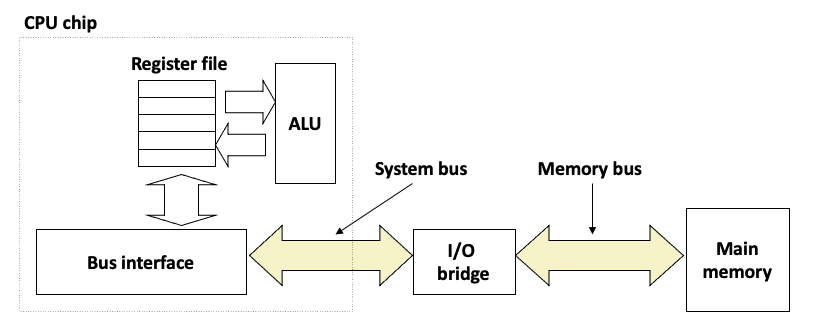
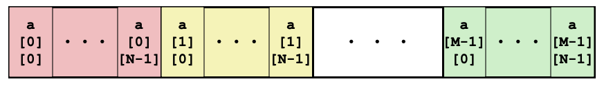

Code optimization
Contents
Code optimization#
Relevant Reading
This lecture will cover contents from Chapter 12 of the book.
1. Debugging#
Defects and Infections
A systematic approach to debugging.
The programmer creates a defect
The defect causes an infection
The infection propagates
The infection causes a failure
Not every defect causes a failure!
Testing can only show the presence of errors - not their absence.
In other words, if you pass every tests, it means that your program has yet to fail. It does not mean that your program is correct.
Explicit debugging
Stating the problem
Describe the problem aloud or in writing
A.k.a.
Rubber duckorteddy bearmethod
Often a comprehensive problem description is sufficient to solve the failure
Scientific and brute force
A bad implementation of Fibonacci sequence
Specification defined the first Fibonacci number as 1.
Compile and run the following
bad_fib.cprogram:fib(1)returns an incorrect result. Why?
$ gcc -o bad_fib bad_fib.c
$ ./bad_fib
Before debugging, you need to construct a hypothesis as to the defect.
Propose a possible defect and why it explains the failure conditions
Ockham’s Razor: given several hypotheses, pick the simplest/closest to current work

Make predictions based on your hypothesis
What do you expect to happen under new conditions
What data could confirm or refute your hypothesis
How can I collect that data?
What experiments?
What collection mechanism?
Does the data refute the hypothesis?
Refine the hypothesis based on the new inputs
Constructing a hypothesis:
while (n 1): did we mess up the loop in fib?int f: did we forget to initializef?
Propose a new condition or conditions
What will logically happen if your hypothesis is correct?
What data can be
fib(1) failed // Hypothesis
Loop check is incorrect: Change to n >= 1 and run again.
f is uninitialized: Change to int f = 1;
Experiment
Only change one condition at a time.
fib(1) failed // Hypothesis
Change to
n >= 1: ???Change to
int f = 1: Works. Sometimes a prediction can be a fix.
Strict compilation flags:
-Wall,-Werror.Include optimization flags (capital letter o):
-O3or-O0.
$ gcc -Wall -Werror -O3 -o bad_fib bad_fib.c
Use
valgrind, memory analyzer.
$ gcc -Wall -Werror -o bad_fib bad_fib.c
$ valgrind ./bad_fib
What is the observed result?
Factual observation, such as
Calling fib(1) will return 1.The conclusion will interpret the observation(s)
Don’t interfere.
Sometimes
printf()can interfereLike quantum physics, sometimes observations are part of the experiment
Proceed systematically.
Update the conditions incrementally so each observation relates to a specific change
Do NOT ever proceed past first bug.
Learn from your mistakes (bugs)
Common failures and insights
Why did the code fail?
What are my common defects?
Assertions and invariants
Add checks for expected behavior
Extend checks to detect the fixed failure
Testing
Every successful set of conditions is added to the test suite
Quick and dirty
Not every problem needs scientific debugging
Set a time limit: (for example)
0 minutes – -Wall, valgrind
1 – 10 minutes – Informal Debugging
10 – 60 minutes – Scientific Debugging
60 minutes – Take a break / Ask for help
2. Performance realities#
Overview
There’s more to performance than asymptotic complexity.
Constant factors matter too!
Easily see 10:1 performance range depending on how code is written
Must optimize at multiple levels: algorithm, data representations, procedures, and loops
Must understand system to optimize performance
How programs are compiled and executed
How modern processors + memory systems operate
How to measure program performance and identify bottlenecks
How to improve performance without destroying code modularity and generality.
Leveraging cache blocks
Create the following two files called
matrix_mult.candblock_matrix_mult.c
The difference between
matrix_mult.candblock_matrix_mult.clays with how the loops are broken up to align with cache size.
Check the size of cache blocks
$ getconf -a | grep CACHE

We focus on cache blocks for optimization:
If calculations can be performed using smaller matrices of A, B, and C (blocks) that all fit in cache, we can further minimize the amount of cache misses per calculation.

3 blocks are needed (for A, B, and C).
Each block has dimension B, so the total block size is \(B^2\)
Therefore: \(3B^{2} < cache_size\)
Based on the information above: B = 8 (so that
8 * 8 = 64fits in cache line).3 * 8 * 8 < 32768.
Compile and run
matrix_mult.c.
$ gcc -o mm matrix_mult.c
$ ./mm 512
$ ./mm 1024
$ ./mm 2048

Compile and run
block_matrix_mult.c.
$ gcc -o bmm block_matrix_mult.c
$ ./bmm 512
$ ./bmm 1024
$ ./bmm 2048

General optimization: you or your compiler should do it.
Reduce code motion
Reduction in strength
Reduce frequency with which computation performed
Need to produce same results
Move code out of loop.
Replace costly operation with simpler ones (multiply to addition).
Recognize sequence of products.
Create the following file to automate the installations.
$ chmod 755 eval.sh
$ ./eval.sh block_matrix_mult
$ ./eval.sh block_matrix_mult_2
$ ./eval.sh block_matrix_mult_3

Intrinsic programming
A function whose implementation is handled specially by the compiler.
Languages: C, C++, Rust
HotSpot JVM for Java’s JRE also has some intrinsic built-in (no direct access from programmers)
Compilers for C/C++, Intel, and GCC implement intrinsics mapping directly to x86_64’s single instructions, multiple data (SIMD) instructions.
Streaming SIMD Extensions (SSE), SSE2, SSE3, AVX, AVX2, …
Addition 16 YMM registers to perform a single instruction on multiple data elements (SIMD).
Each YMM register can hold and carry out the math operations on:
8 32-bit single-precision floating point numbers (or integer), or
4 64-bit double-precision floating point numbers (or long).
$ gcc -mavx2 -o imm intrinsic_sum.c
$ ./imm 1024
$ ./imm 2048
$ ./imm 4096
$ ./imm 8192
$ ./imm 16384
$ ./imm 32678
$ ./imm 33554432
General optimization: when your compiler can’t.
Operate under fundamental constraint
Must not cause any change in program behavior
Often prevents optimizations that affect only “edge case” behavior
Behavior obvious to the programmer is not obvious to compiler
e.g., Data range may be more limited than types suggest (short vs. int)
Most analysis is only within a procedure
Whole-program analysis is usually too expensive
Sometimes compiler does inter-procedural analysis within a file (new GCC)
Most analysis is based only on static information
Compiler has difficulty anticipating run-time inputs
When in doubt, the compiler must be conservative